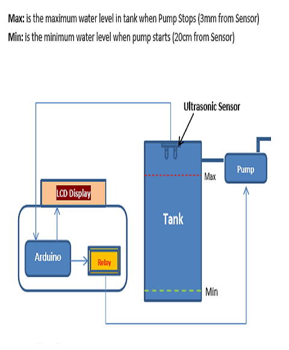

Water Overflow Detector / Smart Water Tank
This simple device solves a very common problem of our society- shortage of water. Using an ultrasonic sensor, it estimates the level of water in a water-tank and turns on or of the pump accordingly thus minimising the wastage of water from excess water running out of overhead tanks

Connections
| VCC of Ultrasonic sensor |
5v of Arduino |
| GND of Ultrasonic sensor |
GND of Arduino |
| ECHO of Ultrasonic sensor |
pin 9 of Arduino |
| TRIG of Ultrasonic sensor |
pin 8 of Arduino |
| |
|
| VCC of One Channel Relay |
5V of Arduino |
| GND of One Channel Relay |
GND of Arduino |
| IN 1 of One Channel Relay |
pin 13 of Arduino |
| |
|
| Pin 1 (VSS) of L.C.D |
GND of Arduino |
| in 2 (VDD) of L.C.D |
5V of Arduino |
| Pin 3 (V0) of L.C.D |
Pin 3 (V0) of L.C.D |
| Pin 4 (RS) of L.C.D |
Pin 12 of Arduino |
| Pin 5 (RW) of L.C.D |
GND of Arduino |
| Pin 6 (EN) of L.C.D |
Pin 11 of Arduino |
| Pin 11 (D4) of L.C.D |
Pin 5 of Arduino |
| Pin 12 (D5) of L.C.D |
Pin 4 of Arduino |
| Pin 13 (D6) of L.C.D |
Pin 3 of Arduino |
| Pin 14(D7) of L.C.D |
Pin 2 of Arduino |
| Pin 15 (A) of L.C.D |
5V of Arduino |
| Pin 16 (K) of L.C.D |
GND of Arduino |
| |
|
#include
LiquidCrystal lcd(12,11,5,4,3,2);
# define echopin 9
# define trigpin 8
int maximumRange=50;
long duration, distance;
void setup(){
lcd.begin(16,2);
Serial.begin (9600);
pinMode (trigpin, OUTPUT);
pinMode (echopin, INPUT);
pinMode (4,OUTPUT);
pinMode (13,OUTPUT);
}
void loop()
{
digitalWrite (trigpin, LOW);
delayMicroseconds(2);
digitalWrite (trigpin, HIGH);
delayMicroseconds(10);
duration = pulseIn(echopin, HIGH);
distance=duration/58.2;
delay(50);
Serial.println(distance);
lcd.clear();
lcd.setCursor (0,0);
lcd.print("WATERLEVEL:");
lcd.print(distance);
delay(0);
if(distance <= 3)
{
digitalWrite (13, HIGH);
digitalWrite (7, HIGH);
lcd.setCursor(0,1);
lcd.print("TANK IS FULL");
delay(0);
}
else if (distance>=20)
{
digitalWrite (7, LOW);
digitalWrite (13, LOW);
lcd.setCursor(0,1);
lcd.print("MOTOR STARTED");
}
}